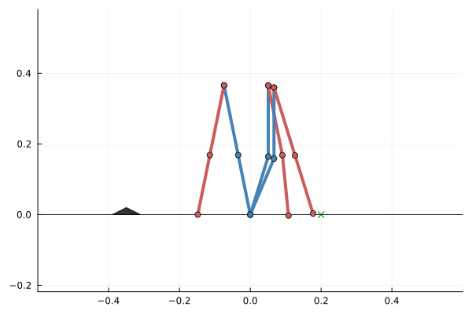

Velocity-controlled biped: a certified footstep
This example is self-contained: the whole pipeline — model, physical constraints, objective, synthesis — is written here with the JuMP front-end (Model(Dionysos.Optimizer)), so every assumption is visible on the page. A packaged version of the same model (with its test suite and the heavier obstacle-crossing scenarios) lives in problems/BipedRobot/4D_model/ and examples/BipedRobot/biped_4d_velocity.jl.
The model and its assumptions
The robot is a planar biped: two legs (hip + knee joints each), the stance foot pinned at the origin. The state is the vector of the four joint angles x = (θ₁, θ₂, θ₃, θ₄) (stance hip, stance knee, swing hip, swing knee); every Cartesian quantity follows by forward kinematics. The input is the vector of commanded joint velocities, and the dynamics are the pure integrator
\[\dot{x} = u .\]
This is a deliberate change of abstraction level compared to the 6-D/8-D torque-controlled models of the same robot: instead of certifying the multibody dynamics, we delegate the torque level to the motors' low-level velocity controllers and certify the kinematic layer above them. The assumptions are:
- the low-level controllers track the commanded velocity within the sampling period (a bounded tracking error
εcan later be re-imported as a disturbance, degrading the abstraction from exact to alternating simulation with a quantified margin); - the motion is quasi-static (balance is not part of the specification) and the stance foot stays pinned.
The payoff: the state dimension halves (angles only — velocities are now inputs) and f(x, u) = x + τ·u is exact.
using StaticArrays
using JuMP
using Symbolics, MathOptSymbolicAD # compile the ∂ dynamics of the front-end
using Dionysos
import LazySets
import Plots
const DI = Dionysos
const MP = DI.Mapping
const ST = DI.SystemDionysos.SystemForward kinematics
Segment lengths follow the canonical robot constants. The swing-foot position is the only map the constraints need; the plotting helper reuses the intermediate joints.
const L1 = 0.20125 # hip → knee
const L2 = 0.172 # knee → foot
function joint_positions(θ::SVector{4})
knee_s = L2 * SVector(-sin(θ[1] + θ[2]), cos(θ[1] + θ[2])) # stance knee
hip = knee_s + L1 * SVector(-sin(θ[1]), cos(θ[1]))
knee_w = hip + L1 * SVector(sin(θ[3]), -cos(θ[3])) # swing knee
foot = knee_w + L2 * SVector(sin(θ[3] + θ[4]), -cos(θ[3] + θ[4]))
return (; knee_s, hip, knee_w, foot)
end
swing_foot(θ::SVector{4}) = joint_positions(θ).footswing_foot (generic function with 1 method)Discretization: the exact lattice
The grids are chosen commensurable: τ · du = dx, so every admissible input translates the state grid exactly onto itself. The abstraction is then deterministic and exact (a bisimulation — zero spurious transitions), which is what legitimizes the CENTER_SIMULATION approximation mode below (unsound in general, exact here); MP.is_lattice_exact checks the property, and MP.intersample_safe_time_step gives the one-cell-per-step time bound.
dx, τ = 0.1, 0.1
du = dx / τ # one speed notch; u ∈ {-du, 0, du} per joint
state_grid = MP.GridFree(SVector(0.0, 0.0, 0.0, 0.0), SVector(dx, dx, dx, dx))
input_grid = MP.GridFree(SVector(0.0, 0.0, 0.0, 0.0), SVector(du, du, du, du))
MP.is_lattice_exact(state_grid, input_grid, τ)truePhysical constraints, pulled back to joint space
The ground (foot_y ≥ 0) and a Cartesian obstacle (a triangular step) are constraints on the swing foot, a nonlinear image of the state. They enter the state space by removing every grid cell in which some configuration might violate them. The test is sound thanks to a Lipschitz bound of the kinematics: within a cell of half-widths h/2, the foot moves by at most dev = Σᵢ gᵢ hᵢ/2 from the center's foot (gᵢ = L1 + L2 for a hip angle, L2 for a knee), so testing the center against the obstacle inflated by dev certifies the whole cell.
Combined with the one-cell-per-step bound, this closes the inter-sample gap: between two samples the joint-space segment stays inside two certified cells, so the foot cannot cross the obstacle between samples either. (Bounding τ by the obstacle width instead is not sound — it prevents jumping fully over, but still allows grazing a corner.)
The margin is also an honest feasibility detector: at dx = 0.1 it is dev ≈ 5.5 cm, and an obstacle placed under the swing path provably disconnects the free space — no controller exists at this resolution (refining to dx = 0.05 halves the margin and makes stepping over feasible; see the packaged scenarios). To keep this documentation build light the obstacle sits behind the start, off the swing path.
obstacle =
LazySets.VPolygon([SVector(-0.39, 0.0), SVector(-0.35, 0.02), SVector(-0.31, 0.0)])
x_bar = 0.6
X_box = LazySets.Hyperrectangle(;
low = SVector(-x_bar, -x_bar, -x_bar, -x_bar),
high = SVector(x_bar, x_bar, x_bar, x_bar),
)
grad = SVector(L1 + L2, L2, L1 + L2, L2) # per-joint Lipschitz bound
dev = sum(grad .* MP.get_h(state_grid) ./ 2)
# `MP.cells_where` collects grid cells by predicate into a `MP.CellUnion` — a
# cell-aligned set whose discretization is exact (a hole removes exactly its
# cells, a target is recovered exactly). The obstacle test could also use
# `MP.image_blocked_cells(swing_foot, grad, ...)` directly; it is spelled out
# here to keep every ingredient visible.
removed = MP.cells_where(state_grid, X_box) do pos
foot = swing_foot(SVector{4}(MP.get_coord_by_pos(state_grid, pos)))
below_ground = foot[2] < -dev
hits_obstacle =
!Dionysos.Utils.is_disjoint(
LazySets.Hyperrectangle(foot, SVector(dev, dev)),
obstacle,
)
return below_ground || hits_obstacle
end
length(removed)1774The objective: place the swing foot on the target foothold
The target is the set of configurations whose swing foot lies on the foothold — a 2-D manifold in the 4-D joint space. Sweeping the stance angles and solving the swing leg's two-link inverse kinematics (elbow-down) enumerates it; quantizing to grid cells (deduplicated) gives the target set.
foothold = SVector(0.2, 0.0)
target_cells = Set{NTuple{4, Int}}()
for θ1 in range(-x_bar, x_bar; step = dx / 3), θ2 in range(-x_bar, x_bar; step = dx / 3)
hip = joint_positions(SVector(θ1, θ2, 0.0, 0.0)).hip
d = foothold - hip
c4 = (d[1]^2 + d[2]^2 - L1^2 - L2^2) / (2 * L1 * L2)
-1.0 <= c4 <= 1.0 || continue
θ4 = -acos(c4)
θ3 = atan(d[1], -d[2]) - atan(L2 * sin(θ4), L1 + L2 * cos(θ4))
θ = SVector(θ1, θ2, θ3, θ4)
all(abs.(θ) .<= x_bar) || continue
push!(target_cells, MP.get_pos_by_coord(state_grid, θ))
end
target_set = MP.CellUnion(state_grid, target_cells)
length(target_cells)76The JuMP model
Everything above becomes a few declarative lines: variables with bounds, the integrator dynamics through ∂, the carved region through ∉, the target through Final, and the discretization through solver attributes.
x0 = SVector(0.2, 0.0, -0.2, 0.0)
model = Model(Dionysos.Optimizer)
@variable(model, -x_bar <= x[i = 1:4] <= x_bar, start = x0[i])
@variable(model, -du <= u[1:4] <= du)
@constraint(model, [i = 1:4], ∂(x[i]) == u[i])
@constraint(model, x ∉ removed)
@constraint(model, x in Final(target_set))
set_attribute(model, "time_step", τ)
set_attribute(model, "state_grid", state_grid)
set_attribute(model, "input_grid", input_grid)
set_attribute(
model,
"approx_mode",
DI.Optim.Abstraction.UniformGridAbstraction.CENTER_SIMULATION,
)
optimize!(model)
get_attribute(model, "success")trueClosed loop of this unconstrained controller, to compare against the slew-rate-limited one below:
controller_free = get_attribute(model, "concrete_controller")
discrete_time_system = get_attribute(model, "discrete_time_system")
reached(xk) = xk ∈ target_set
traj_free = ST.get_closed_loop_trajectory(
discrete_time_system,
controller_free,
x0,
100;
stopping = reached,
)
xs_free = collect(ST.states(traj_free))
(length(xs_free) - 1, reached(xs_free[end]))(5, true)The acceleration constraint
Because the inputs are velocities, bounding the difference between consecutive inputs is an acceleration (slew-rate) limit — precisely what makes the command trackable by the motors, closing the loop with assumption 1. The value function of this constrained synthesis lives on (state, input) pairs (the classical turn-restricted shortest path), and the controller is dynamic: its memory is the previously played input. Here: at most one speed notch of change per joint per step, starting from and ramping down to rest.
rest = SVector(0.0, 0.0, 0.0, 0.0)
slew = DI.Optim.DiscreteSystems.BoundedInputVariation(
(u1, u2) -> maximum(abs.(u1 - u2)),
du;
target_input = rest,
initial_input = rest,
)
set_attribute(model, "bounded_input_variation", slew)
optimize!(model)
get_attribute(model, "success")trueClosed loop of the constrained controller — a few steps longer than the unconstrained one: the difference is the acceleration ramps.
controller = get_attribute(model, "concrete_controller")
traj = ST.get_closed_loop_trajectory(
discrete_time_system,
controller,
x0,
100;
stopping = reached,
)
xs = collect(ST.states(traj))
us = collect(ST.inputs(traj))
(length(xs) - 1, reached(xs[end]))(5, true)maximum(maximum(abs.(us[k + 1] - us[k])) for k in 1:(length(us) - 1))1.0The measured maximum input variation sits exactly at the bound: the constraint is active and satisfied along the whole run.
Visualizing the footstep
function draw_robot!(fig, θ::SVector{4})
p = joint_positions(θ)
Plots.plot!(
fig,
[0.0, p.knee_s[1], p.hip[1]],
[0.0, p.knee_s[2], p.hip[2]];
lw = 4,
marker = :circle,
color = :steelblue,
label = "",
)
Plots.plot!(
fig,
[p.hip[1], p.knee_w[1], p.foot[1]],
[p.hip[2], p.knee_w[2], p.foot[2]];
lw = 4,
marker = :circle,
color = :indianred,
label = "",
)
return fig
end
fig = Plots.plot(; aspect_ratio = :equal, legend = false, xlims = (-0.6, 0.6))
Plots.plot!(fig, [-0.6, 0.6], [0.0, 0.0]; color = :black, lw = 1, label = "")
Plots.plot!(fig, obstacle; color = :black, alpha = 0.8, label = "")
Plots.scatter!(fig, [foothold[1]], [foothold[2]]; marker = :xcross, color = :green)
for (k, xk) in enumerate(xs)
(k % 4 == 1 || k == length(xs)) && draw_robot!(fig, xk)
end
fig
The blue stance leg stays planted, the red swing leg travels from behind to the green foothold.
What is certified, and what is not
Certified: the closed-loop joint trajectory reaches the target foothold manifold, never drives the swing foot into the obstacle or below the ground — at sampling instants and in between (exact lattice + sound carving + one cell per axis per step) — and respects the input slew-rate limit with rest-to-rest ramps.
Assumed: the low-level velocity tracking (assumption 1) and the quasi-static regime (assumption 2). Quantifying the tracking error and re-importing it as a bounded disturbance is the natural next step — the growth-bound machinery accepts it directly, at the price of an abstraction that is no longer exact but remains sound.
Going further
The packaged driver examples/BipedRobot/biped_4d_velocity.jl extends this page with a finer grid, a two-level velocity alphabet (multi-cell steps made sound by swept-cell validation, MP.swept_input_filter), harder scenarios — stepping over a 16 cm × 5 cm block, threading a 1.6 cm certified window, clearing a thin 10 cm wall, a crouched limbo step where a low bar constrains the hip through a second image map — and an animated dashboard whose state panel shows the moving slice of the carved region (Dionysos.animate_trajectory_dashboard with state_background!).
This page was generated using Literate.jl.